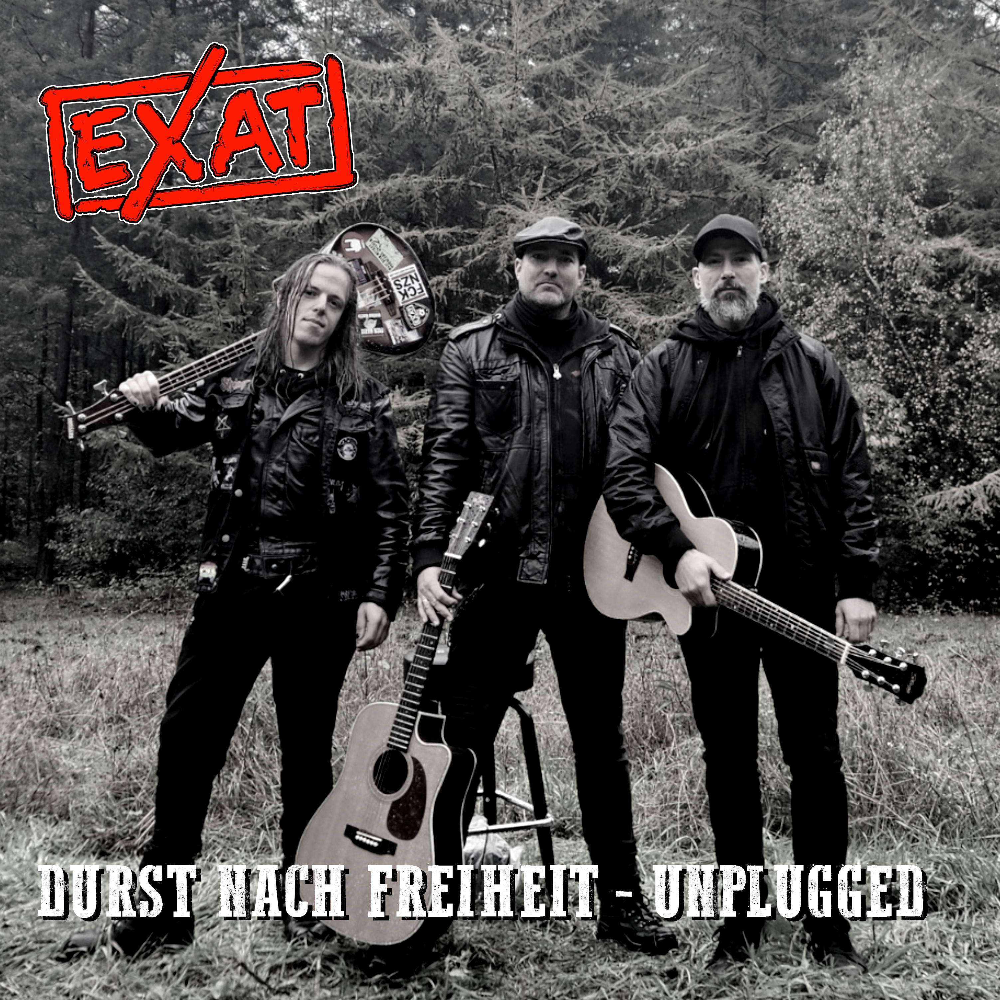

Vorab gehört
EXAT - Durst nach Freiheit Unplugged

Hinweis: "Durst nach Freiheit - Unplugged" erscheint offiziell am 24.06.2026. Das Musikvideo soll am 25.06.2026 folgen. Dieser Text basiert auf vorab zur Verfügung gestelltem Material.

Vorweg: Clemens von EXAT war schon mal bei mir im RandaleFUNK-Interview. Deshalb landet diese Single nicht in irgendeinem anonymen Promo-Stapel, sondern direkt auf dem Schreibtisch. Einen Freundschaftsbonus gibt es trotzdem nicht. Wenn ein Song nichts taugt, hilft auch kein gemeinsames Bier.
"Durst nach Freiheit" erscheint am 24.06.2026 als Unplugged-Version. Laut Presseinfo ist es die erste Veröffentlichung der neuen Besetzung und ein älterer EXAT-Song im neuen Gewand.
Das Lustige ist: Ich bin mir ziemlich sicher, dass ich das Ding irgendwann schon mal gehört habe.
Nicht diese Version.
Die alte.
Irgendwann zwischen Pandemie, Umzugskartons, Interviews, Newsfolgen und den üblichen dreißig Bands, die man sich eigentlich alle merken wollte.
Und vielleicht ist genau das der Grund, warum die Akustik-Version bei mir funktioniert.
Sie versucht gar nicht erst, größer zu sein als das Original.
Sie macht etwas anderes daraus.
Während viele Unplugged-Versionen wirken, als hätte jemand einfach die Verstärker aus dem Proberaum getragen, klingt "Durst nach Freiheit" tatsächlich nach einem eigenen Song. Die Nummer verliert Druck, gewinnt dafür aber Atmosphäre.
Und nein, ich meine damit nicht dieses romantische Lagerfeuer aus der Werbung, wo alle Menschen perfekte Zähne haben und zufällig Gitarre spielen können.
Das hier klingt eher nach feuchter Luft, kalten Händen und der letzten Runde, obwohl man eigentlich längst nach Hause wollte.
Nicht jeder Ton sitzt hundertprozentig.
Gut so.
Wenn solche Songs zu perfekt werden, verlieren sie etwas. EXAT lassen genug Kanten stehen, damit man noch merkt, dass hier Menschen Musik machen und keine Software.
Besonders die Stimme trägt die Nummer erstaunlich gut. Zusammen mit den Akustikgitarren entsteht etwas, das gleichzeitig warm und etwas angeschlagen wirkt. So, als hätte der Song selbst schon ein paar Jahre auf dem Buckel. Laut Presseinfo übernimmt Daniel diesmal den Akustik-Bass, während Clemens und Matze die Gitarren spielen.
Mit dem Text hatte ich übrigens ein kleines Problem.
Nicht weil er schlecht wäre.
Eher das Gegenteil.
Ich höre die Zeilen über Freiheit, Sehnsucht, Flucht, Fehler und Selbstzweifel. Ich höre den Refrain. Ich verstehe auch, worauf der Song hinauswill. Aber mein Kopf bekommt das nicht komplett sortiert. Vielleicht bin ich dafür einfach zu blöde. Vielleicht ist das aber auch einer dieser Songs, die man eher fühlt als analysiert.
Was bei mir hängen bleibt, ist dieses ständige Suchen.
Der Wunsch nach Freiheit.
Der Traum, endlich irgendwo anzukommen.
Und die Erkenntnis, dass man sich dabei manchmal selbst im Weg steht.
Der Song beschreibt keinen Helden. Eher jemanden, der schon ein paar Mal falsch abgebogen ist und trotzdem weiterläuft. Gerade dadurch wirkt das glaubwürdig.
Und noch etwas:
Beim Hören bekomme ich Durst.
Das ist vermutlich nicht die beabsichtigte Botschaft.
Aber wenn ein Song "Durst nach Freiheit" heißt und gleichzeitig so klingt, wie er klingt, dann passiert das nun mal. Mein Gehirn verbindet das sofort mit langen Nächten, Gesprächen, die eigentlich längst beendet waren, und diesem Moment, in dem man merkt, dass morgen zwar Arbeit ist, aber heute eben noch nicht vorbei.
Wenn ich 2027 tatsächlich mal mein erstes Punk-Lagerfeuer-Konzert veranstalten sollte, dann möchte ich EXAT dort haben.
Nicht als große Headliner-Show.
Einfach irgendwo zwischen den Leuten.
Mit genau solchen Songs.
"Durst nach Freiheit (Unplugged)" wird die Welt nicht verändern.
Aber die Nummer schafft etwas, das deutlich seltener geworden ist:
Sie wirkt ehrlich.
Und manchmal reicht das völlig.
Dir gefällt die Arbeit vom RandaleFUNK? Dann unterstütze das Projekt gerne mit einer freiwilligen Spende über Ko-fi.